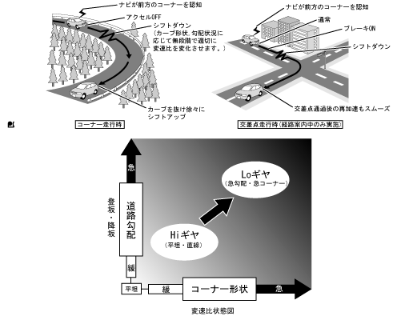

| NAVI/AI-SHIFT |
| ● |
Road conditions are judged 3-dimensionally based on road gradient information and road corner information from the navigation system, and CVT gear ratio control suited to various roads is performed. This achieves smooth and comfortable driving. NAVI AI-SHIFT control is performed only in the D position. NAVI AI-SHIFT control is not performed when sport sequential Shiftmatic is selected.
|
| ● |
NAVI AI-SHIFT control is performed only on vehicles with the factory-option navigation system.
|
 |
 Development Objectives Development Objectives
|
Downshift/Upshift Operating Conditions
|
 Configuration of NAVI AI-SHIFT Configuration of NAVI AI-SHIFT
|
NAVI AI-SHIFT Non-operating Conditions, Restrictions, etc.
It may not operate correctly depending on the situation, so do not rely too heavily on NAVI AI-SHIFT; always pay attention to road conditions and drive at a safe speed.
|
NAVI AI-SHIFT Fail-safe Function
|
 Related Parts Related Parts
|